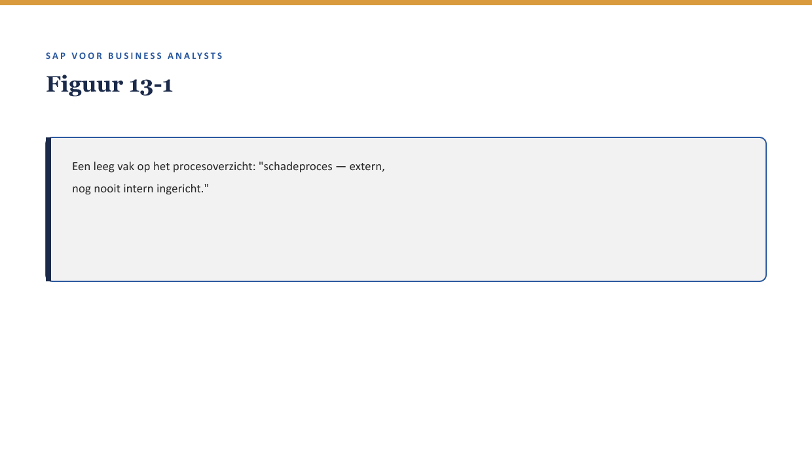
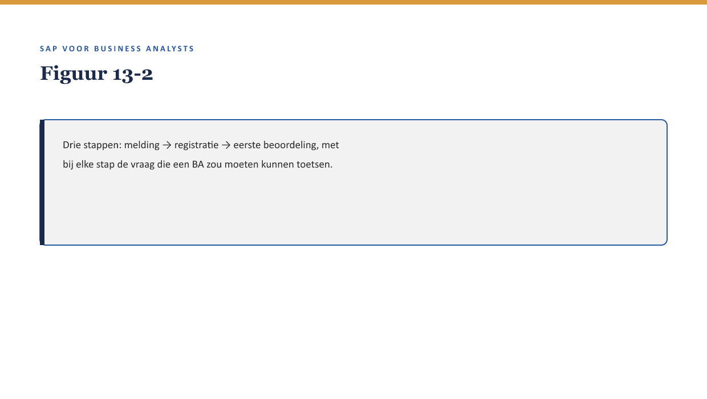
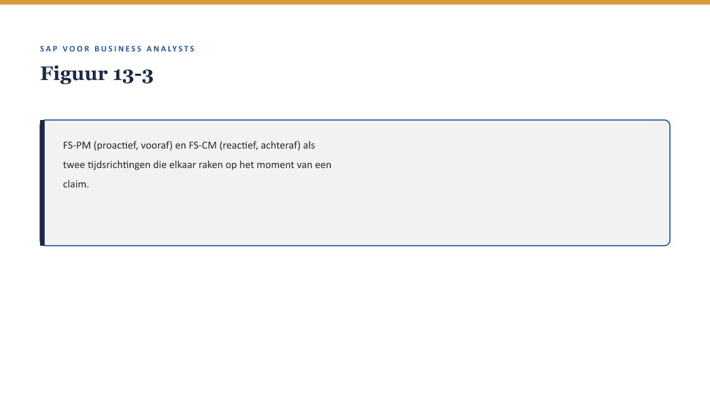

Deel 13 — FS-CM: het schadeproces I
Slidedeck · Niveau 2 Professional · Cursus SAP voor Business Analysts · Ductus
Slidetypen: titleSlide, sectionSlide, bulletsSlide, statementSlide, quoteSlide, tableSlide, figureSlide, opdrachtSlide.
Slide 1 — titleSlide
FS-CM: het schadeproces I Deel 13 · Niveau 2 Professional · Cursus SAP voor Business Analysts
Slide 2 — quoteSlide
“Bij FS-PM kon je teruggrijpen op wat Panorama al deed. Hier is er niets om op terug te vallen. We bouwen dit voor het eerst.” — Youssef Amrani
Slide 3 — figureSlide

Slide 4 — bulletsSlide
Wat we vandaag doen
- Claim-registratie: melding, registratie, eerste beoordeling
- Dekkingsbeoordeling — waarom een claim nooit los van de polis staat
- Proactief versus reactief
- Fit-gap zonder precedent
Slide 5 — sectionSlide
Claim-registratie
Slide 6 — figureSlide

Slide 7 — opdrachtSlide
Opdracht 13.1 — Drie stappen herkennen
Koppel drie activiteiten aan melding, registratie, of eerste beoordeling.
Slide 8 — sectionSlide
Dekkingsbeoordeling
Slide 9 — quoteSlide
Een claim beoordelen zonder de juiste polis erbij, is als een BTX uitvoeren zonder het juiste stamgegeven op te zoeken. — Kernzin, reader §4
Slide 10 — figureSlide

Slide 11 — opdrachtSlide
Opdracht 13.3 — De koppeling naar FS-PM
Een claim komt binnen vlak na een dekkingswijziging. Twee risico’s?
Slide 12 — statementSlide
Geen bestaand proces om tegen af te zetten.
“Wat willen we dat het wordt” in plaats van “wat deden we al.”
Slide 13 — bulletsSlide
Samenvatting in vijf zinnen
- Meridiaan bouwt het schadeproces voor het eerst intern, zonder Panorama-precedent
- Claim-registratie: melding, registratie, eerste beoordeling
- Een claim vergt altijd correcte, actuele FS-PM-gegevens
- FS-PM is proactief, FS-CM is reactief
- Fit-gap zonder precedent vergt nauwere samenwerking met de business
Slide 14 — titleSlide
Volgende deel FS-CM: het schadeproces II Deel 14